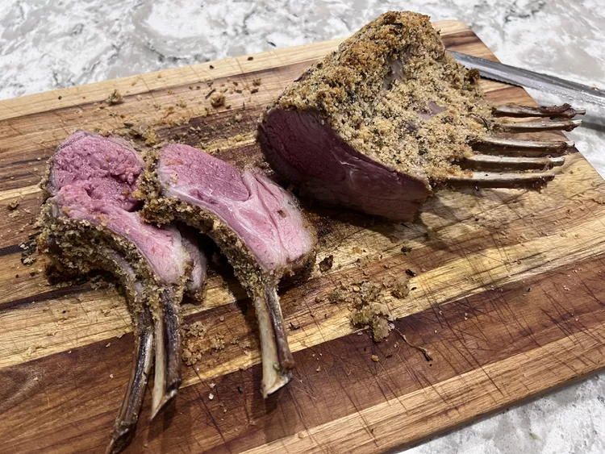

Roasted Rack of Lamb

Description
A rack of lamb is often topped with a flavorful herby crust before roasting. The crust, made from fresh herbs like rosemary, thyme, and parsley mixed with garlic, breadcrumbs, and sometimes Dijon mustard, adheres to the meat and infuses it with aromatic flavors as it cooks. During roasting, the crust becomes golden and crispy, creating a delicious contrast to the tender, juicy lamb inside. This preparation enhances both the flavor and presentation, making it a popular choice for special occasions.
Ingredients
- 1/2 cup fresh bread crumbs
- 2 tablespoons minced garlic
- 2 tablespoons chopped fresh rosemary
- 1 teaspoon salt
- 1/4 teaspoon black pepper
- 2 tablespoons olive oil
- 1 (7 bone) rack of lamb, trimmed and frenched
- 1 teaspoon salt
- 1 teaspoon black pepper
- 2 tablespoons olive oil
- 1 tablespoon Dijon mustard
Steps
- Preheat the oven to 450 degrees F (230 degrees C). Move the oven rack to the center position.
- Combine bread crumbs, garlic, rosemary, 1 teaspoon salt, and 1/4 teaspoon pepper in a small bowl; stir in 2 tablespoons olive oil to moisten the mixture. Set aside.
- Season rack of lamb all over with 1 teaspoon salt and 1 teaspoon pepper. Heat 2 tablespoons olive oil in a large heavy oven-proof skillet over high heat. Add lamb and sear on all sides, about 1 to 2 minutes: set lamb aside for a few minutes. Brush lamb with mustard and roll in bread crumb mixture until evenly coated. Cover the ends of the bones with foil to prevent charring.
- Arrange the breaded rack of lamb bone-side down in the same skillet. Roast in preheated oven for 12 to 18 minutes for medium; an instant-read thermometer inserted into the center should read at least 130 degrees F (54 degrees C), or continue to cook to desired doneness. Remove lamb from the skillet and allow to rest for 5 to 7 minutes, loosely covered with foil, before carving between the ribs.